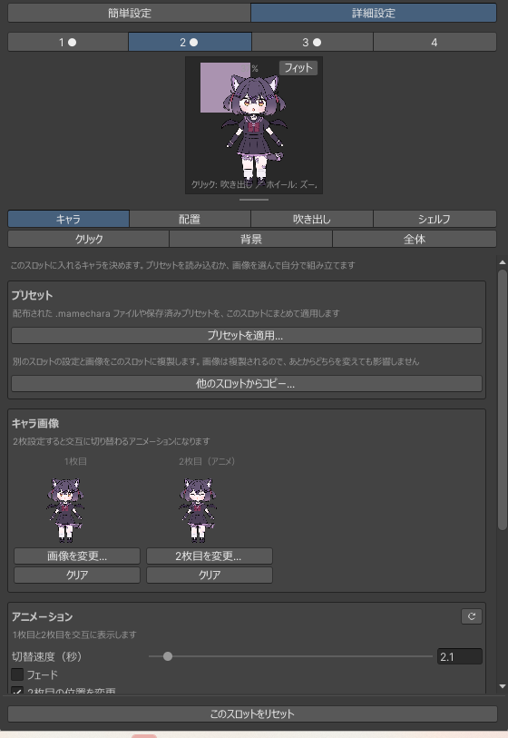
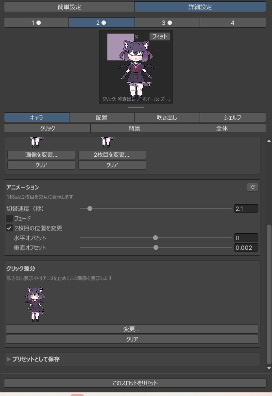
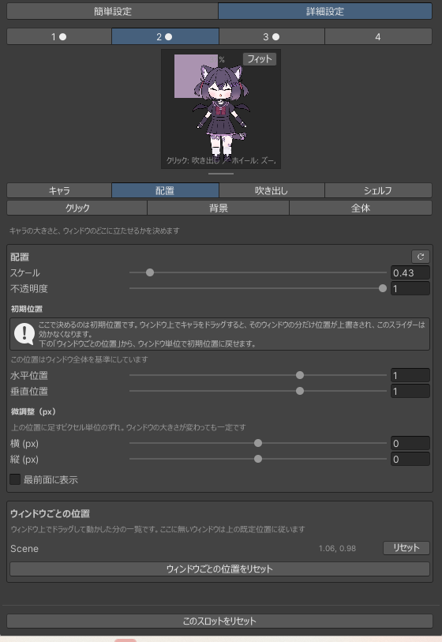
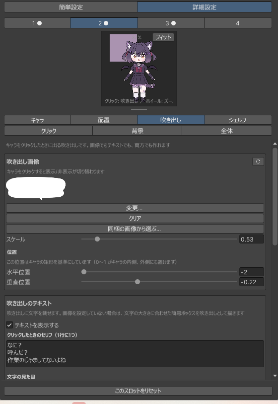
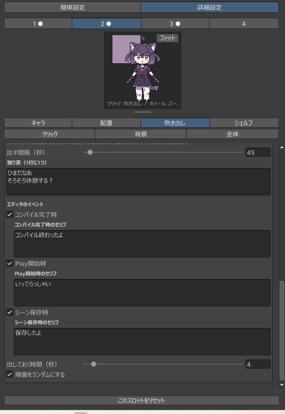
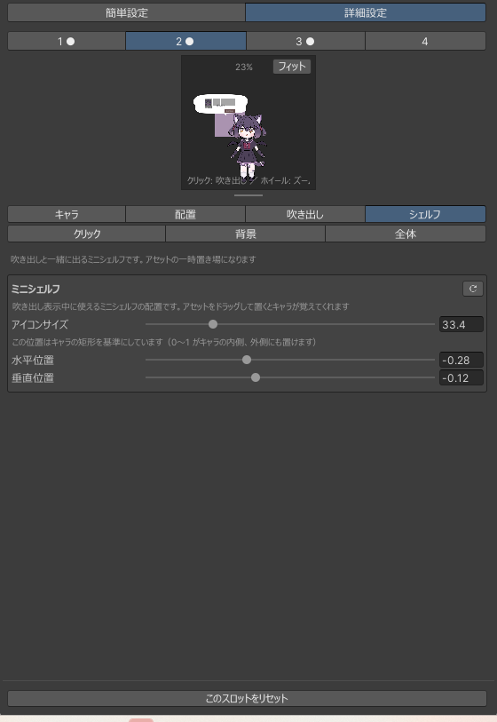
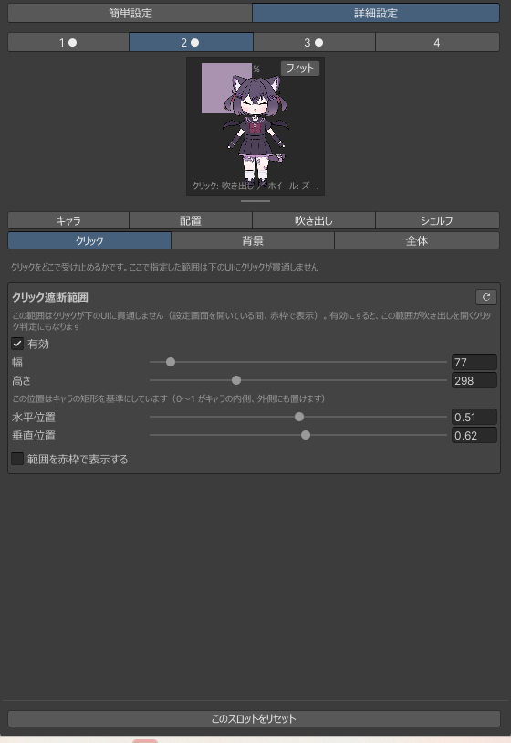
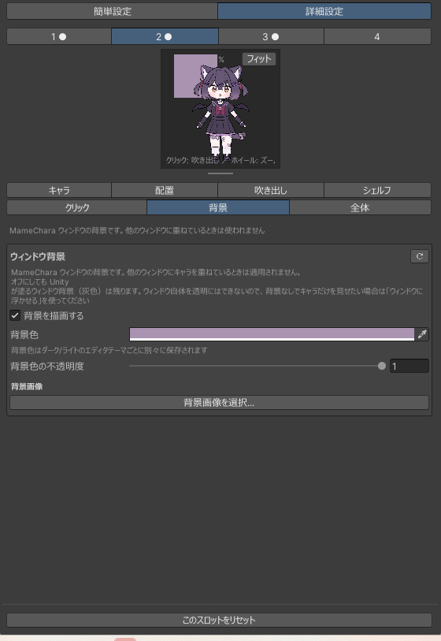
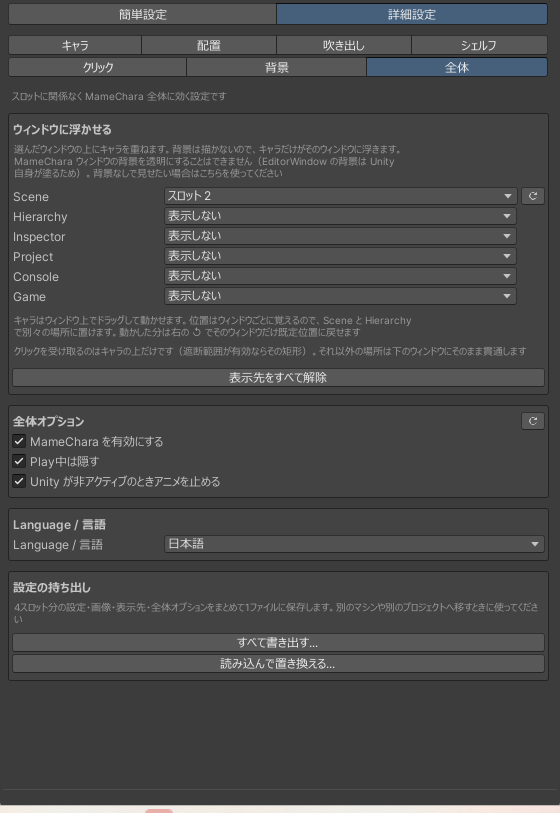

自分の絵で作る
プリセットを使わず、手持ちのイラストからキャラを組み立てます。ここからは 詳細設定の話です。上の切り替えで詳細設定を選ぶと、 7つのタブが出てきます。最初の6つは選んでいるスロットに対する設定で、 全体だけが MameChara 全体に効きます。
透過 PNG を用意してください。大きさは自由です——読み込んだあとスケールで合わせられます。
選んだ画像は ProjectSettings/MameChara/ にコピーされるので、
元ファイルを移動したり消したりしてもキャラは消えません。
-
キャラ画像を入れる
キャラタブの キャラ画像 で 画像を変更... を押して 1枚目を選びます。これだけでキャラが立ちます。
2枚目（アニメ）も設定すると、2枚が交互に切り替わるアニメーションになります。 まばたき、しっぽの動き、呼吸——2枚で表現できるものなら何でも。
同じタブの 他のスロットからコピー... は、別のスロットの設定と画像をまるごと複製します。 画像も複製されるので、あとからどちらを変えても影響しません。色違いを作るときに便利です。

キャラタブの上半分。1枚目と2枚目、その下がアニメーションの設定です。 -
アニメとクリック差分を決める
アニメーションでは切り替わり方を決めます。
切替速度（秒） 1枚あたりの表示時間 フェード 入れるとクロスフェード、切ればパッと切り替わる 2枚目の位置を変更 2枚目だけ位置をずらす。跳ねる動きが作れます クリック差分は、吹き出しを開いているあいだに表示する画像です。 設定するとアニメが止まり、この1枚に切り替わります。話しているときの表情を別に描いておく用途です。

アニメーションとクリック差分。切替速度・フェード・2枚目のオフセット。 -
立ち位置と大きさを決める
配置タブで大きさ・不透明度・立ち位置を決めます。 スライダーのほかにピクセル単位の微調整もあるので、端にぴったり寄せたいときはこちら。
ここは「初期位置」ですキャラはウィンドウ上で直接ドラッグして動かせます。動かすと、 そのウィンドウの位置だけがここより優先されます。 タブの下にウィンドウごとの位置の一覧が出るので、 どのウィンドウに上書きが残っているかはそこで分かります。行ごとに個別に消せます。
手前に描くを入れると、ウィンドウのUIより前に出ます。

配置タブ。初期位置であることと、ドラッグの上書きについての案内が出ます。 -
吹き出しを用意する
吹き出しタブ。キャラをクリックしたときに開くものです。 画像でもテキストでも、両方でも作れます。
吹き出し画像には既定の吹き出しが同梱されているので、 同梱の画像から選ぶ...を押せば自分で描かなくても始められます。
画像を入れない場合は、テキストの実サイズに合わせた簡易ボックスが描かれます。 セリフだけ書けば吹き出しとして成立します。
位置はキャラの矩形を基準にした相対値です（0〜1 がキャラの内側、外にも置けます）。 文字サイズ・文字色・余白もここで。

吹き出しタブの上半分。同梱の画像から選べます。 -
きっかけごとにセリフを書く
セリフは1行にひとつ書きます。複数行あればその中から選ばれます。 そしてきっかけごとに別のリストを持っています。
クリック キャラをクリックしたとき 独り言 放っておくと一定間隔で。出す間隔を 0 にすると黙ります コンパイル完了時 スクリプトのコンパイルが終わったとき Play開始時 再生を始めたとき シーン保存時 シーンを保存したとき 重なったときの優先度クリック → イベント → 独り言の順です。 クリックは最優先で割り込みます。別のセリフが出ている最中にクリックしても クリックのセリフに切り替わり、出ていた自動表示は打ち切られます。
逆に、クリックで吹き出しを開いているあいだは自動表示は始まりません。 ミニシェルフを触っているときに独り言で上書きされない、ということです。
出しておく時間は自動表示（イベントと独り言）に共通です。 順番をランダムにするを切ると、書いた順に出ます。

きっかけごとに別のセリフ欄があります。チェックを外したイベントの欄は隠れます。 -
ミニシェルフの位置を合わせる
シェルフタブ。吹き出しと一緒に出る4枠のアセット置き場です。 アイコンサイズと位置を、キャラの矩形を基準に決めます。
吹き出し画像の中にきれいに収まるよう合わせるのがコツです。 プレビューでキャラをクリックすれば、実際の重なりを見ながら調整できます。

シェルフタブ。プレビューでは吹き出しの中にシェルフが並んでいます。 -
クリック遮断範囲を決める
クリックタブ。キャラの周りでクリックを受け止める四角です。 ウィンドウの上に浮かせているとき、この範囲がないとキャラを押したクリックが 下の Hierarchy や Project に通ってしまいます。
範囲を赤枠で表示するを入れると、範囲が見えるので合わせやすくなります。 赤枠はこの設定ウィンドウを開いているあいだだけ出るので、 決め終わったら切っておいても構いません。
広すぎると本来のUIが押せなくなるので、キャラの見た目より少し大きいくらいが目安です。

クリックタブ。赤枠は範囲を決めるときだけ出せます。 -
背景を敷く（専用ウィンドウ向け）
背景タブ。MameChara 専用ウィンドウの背景に、色・画像 （タイル or 伸ばす）・その両方を敷けます。それぞれに不透明度があります。
これは専用ウィンドウの中の話です。他のウィンドウに浮かせているときは背景を塗らないので、 関係ありません。

背景タブ。専用ウィンドウに色や画像を敷きます。 -
全体の設定を確認する
全体タブはスロットに属さない設定です。
ウィンドウに浮かせる どのウィンドウにどのスロットを出すか MameChara を有効にする 切ると設定を残したまま全ウィンドウで表示を止めます Play中は隠す 再生中はキャラを出しません Unity が非アクティブのとき
アニメを止める他のアプリを使っているあいだ再描画を止めます Language / 言語 日本語 / English 設定の持ち出し 4スロット分をまとめて1ファイルに書き出し・読み込み 
全体タブ。ここだけスロットの選択が効きません。
{kind=link}
{kind=link}
{kind=link}
{kind=link}
{kind=link}
{kind=link}
{kind=link}
{kind=link}
{kind=link}
作ったものを残す
組み上がったらプリセットとして保存しておくと、名前を付けて呼び出せます。
別のプロジェクトや他の人に渡すなら .mamechara ファイルに書き出します。
やり方は プリセットを配る へ。
自分の環境ごと移したいだけなら、全体タブの設定の持ち出しで 4スロット分をまとめて1ファイルにできます。